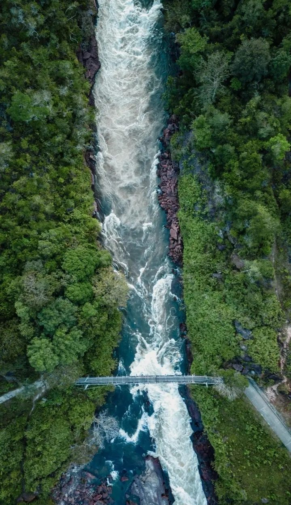

Conociendo nuestros territorios¶
Recorridos para reconocer los paisajes, las dinámicas locales y las historias que acompañan el monitoreo de carbono.



La Chorrera
Territorio amazónico de gran biodiversidad, donde el proyecto fortalece alianzas y conoce las dinámicas de las comunidades locales.
Leticia
Puerta de entrada al Amazonas y punto de encuentro para conectar conocimiento científico, territorio y comunidades.
Santiago
Un espacio para reconocer las prácticas locales y los ecosistemas que hacen parte de la red territorial de COLFLUX.
Calamar
Territorio de transición amazónica donde se encuentran bosques, ríos y comunidades con saberes propios.
San José del Guaviare
Un paisaje de encuentro entre la Amazonía y la Orinoquía, con comunidades y ecosistemas estratégicos.
Inírida
Territorio de ríos y sabanas amazónicas donde la biodiversidad y la cultura local orientan el diálogo.
El Cocuy
Paisajes de alta montaña que permiten conversar sobre páramos, agua y conservación con los actores locales.


Güicán de la Sierra
Un territorio de páramo y montaña donde el cuidado del agua conecta el conocimiento local y científico.
Choachí
Montañas cercanas a Bogotá que muestran la relación entre ecosistemas altoandinos y comunidades rurales.
Fómeque
Un territorio de páramo, bosque y agua donde el diálogo con los actores locales es esencial.
La Calera
Un paisaje altoandino próximo a la capital, clave para comprender los vínculos entre agua, ciudad y ruralidad.
Villavicencio
Puerta de la Orinoquía, donde confluyen paisajes de piedemonte, sabana y redes de trabajo territorial.
Puerto Lleras
Sabana y ríos de la Orinoquía que permiten reconocer sus ciclos, biodiversidad y actividades productivas.
San Luis de Palenque
Territorio llanero para conversar sobre sabanas inundables, biodiversidad y formas de vida locales.